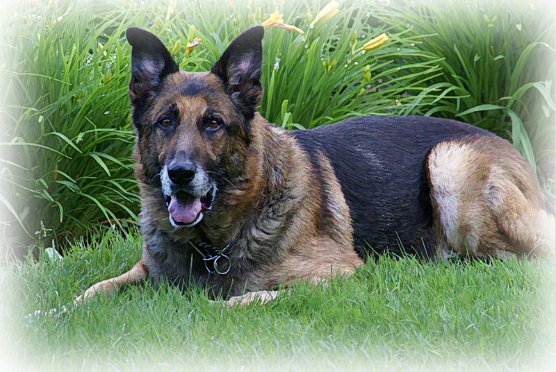
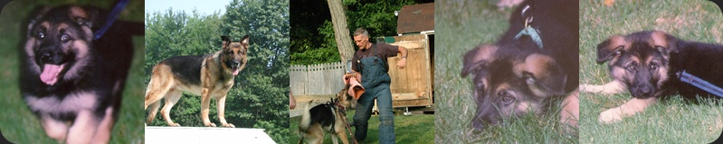

Welcome To The Celebration of the Life of Nasdaq
I just lost my best pal and I sit here with a hole in my heart through which you could drive a truck. Nasdaq and I spent 10 years (and I mean 12 hours a day for 10 years) working together. If I was designing a website he was lying at my feet. If I had to go somewhere in my car he was in the back. The two of us went for protection training and then we were both lucky enough to be allowed to attend a police canine academy for 16 weeks.
For some reason I have documented his life from the time he arrived at Logan Airport and I would like to share it with you.

June 29, 1999 – January 20, 2010
